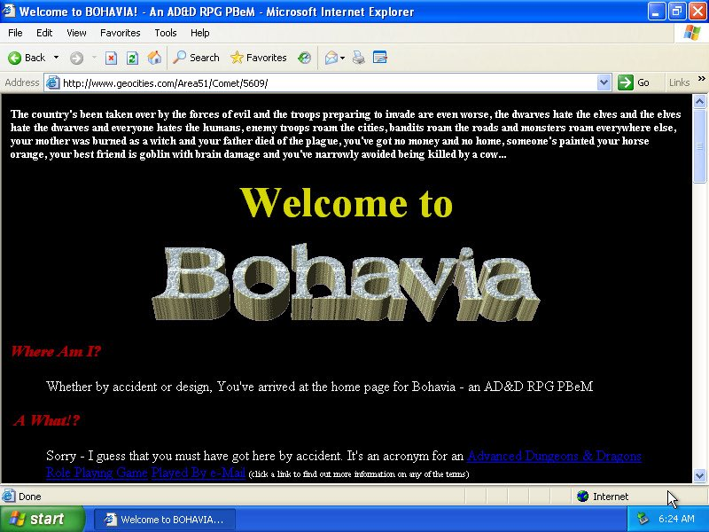
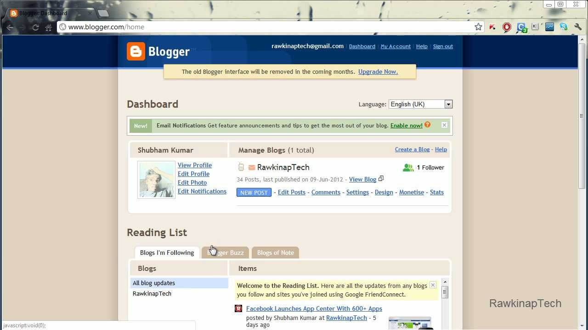

A importância de ter um site pessoal.
por Maicon VieiraA arte perdida dos sites pessoais

Imagem de um site antigo.Apesar de não ter vivido o auge da internet antiga, onde Doom era o assunto do momento e as inovações dos computadores, sistemas e videogames eram motivos de grande expectativa, eu tive a oportunidade de vivenciar uma internet que estava ainda intrinsecamente ligada ao tráfego orgânico entre uma url aqui e outra ali.
Em meados de 2009 a 2015 ainda era comum a procura de conteúdos através dos sites, sem IA pra resumir sua busca, sem barra de pesquisa no TikTok, como faziam os Incas e os Maias era necessário ver site por site dos resultados trazidos pelo buscador, que apesar de ser uma merd# pela dificuldade de achar o que você realmente queria, ainda sim era algo que rendia descobertas de blogs, sites e fóruns, e que eventualmente te prendia em um. E esse é o ponto: Nessa época quem realmente queria dar sua voz ao mundo, podia fazer um site com o que gostava e publicar, muitos só usavam isso como um diário de viagens, experiências e opiniões pessoais.
Mas se engana quem pensa que sempre foi uma coisa fácil criar um site, existiam alguns monstros no caminho: Conhecimento sobre HTML, Onde hospedar e os custos para ter um domínio próprio. Mas com o auge do Blogger o conceito de weblog rapidamente se espalhou pela internet, com sua ridícula facilidade na construção de um site. Permitindo pessoas que não queriam se dar ao trabalho de ter um conhecimento técnico apenas postar seus assuntos triviais ou bem trabalhados na internet.
